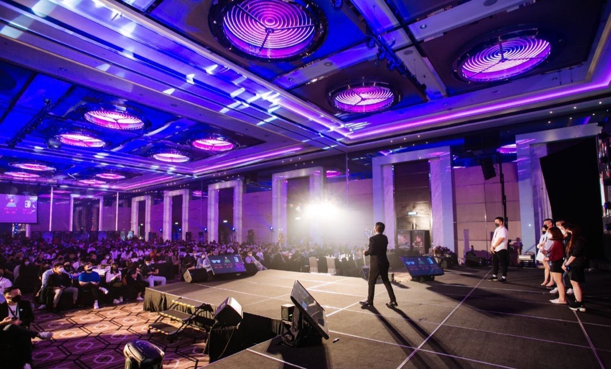

ON STAGE
From Regional Stages to International Audiences



Keynotes, workshops, and fireside chats on strategy, leadership, and the long arc of building something that lasts in direct selling.
Most speakers know the field. Some know the corporate side. Mikael has lived both — eight years building teams from the ground up, fifteen years shaping strategy from inside three multinational direct selling companies. That dual perspective is what audiences walk away with: not generic motivation, but battle-tested clarity on what actually builds organizations that last.
Each talk pairs an original framework with real stories from 23 years on both sides of the table. Customizable for your audience and length.
KEYNOTE · 45–60 MIN
Why the leaders who last in direct selling aren't the loudest, the fastest, or the most charismatic — they're the ones who think in decades, not quarters. A flagship keynote on building organizations that survive market shifts, leadership transitions, and time itself.
KEYNOTE · 30–45 MIN
What field leaders don't see about strategy. What corporate leaders don't feel about the field. A keynote drawn from 23 years on both sides of the table, with practical frameworks for closing the gap that costs the industry millions.
WORKSHOP · 90 MIN
An interactive workshop based on Mikael's upcoming book. Apply 2,500 years of battle-tested strategic wisdom to the modern direct selling battlefield — knowing your terrain, choosing your battles, and winning without fighting.
TRAINING · 60 MIN
The first two years are a battlefield. Most leaders who quit do so because they didn't know which battles to fight. A practical training session designed to equip emerging leaders with the five strategic priorities that determine long-term success.
Every talk is tailored to your event's theme, your audience's experience level, and the outcomes you want them to leave with. No copy-paste keynotes.
Keynote (30–60 min). Workshop (90 min). Fireside chat (30 min). Panel facilitation. Multi-day intensive. Whatever your event needs, the content adapts.
Available in English and Mandarin. Both languages spoken with native fluency, allowing seamless code-switching for mixed audiences across Asia.
Corporate kickoffs, leadership retreats, distributor conventions, regional summits.
Direct selling associations, MLM industry events, professional networks across Asia.
Entrepreneurship summits, sales leadership forums, business strategy gatherings.
Universities, business schools, professional development programs.

Tell me about your event — date, audience, theme, format. I respond to every speaking inquiry personally.
Prefer email? Use the contact form for a more detailed brief.